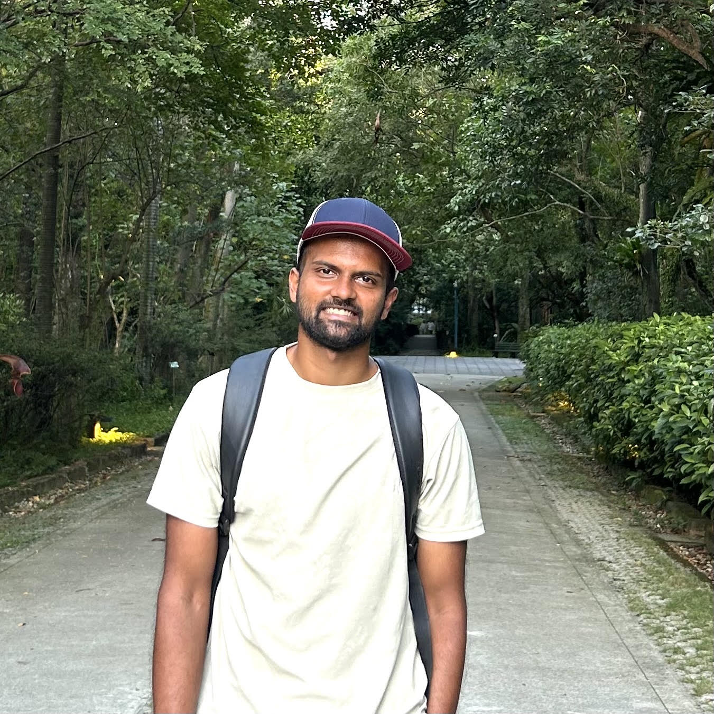
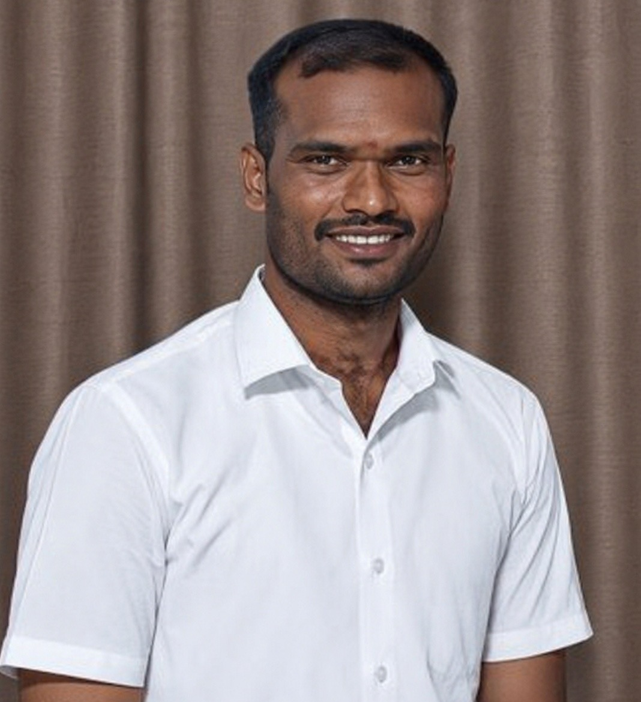

Research Interests
I am interested in mathematical and computational methods for the analysis and control of complex dynamical systems under uncertainty, communication constraints, faults, and cyber-attacks. I work across:
- Robust & Resilient Control
- Networked & Multi-Agent Systems
- Event-Triggered Mechanisms
- Stochastic Systems
- Stability Theory
- Reinforcement Learning
Applications include:
- Autonomous Vehicles
- Unmanned Aerial & Surface Vehicles
- Robotic Systems
- Cyber-Physical Systems
News
Jan 2027
Our paper titled
"Learning-based homotopic policy iteration for optimal path-tracking control of nonholonomic mobile robots"
has been accepted in the 12th
Indian Control Conference (ICC) 2027,
IIT Kharagpur, India.
Aug 2026
Presented our paper titled
"Model-based homotopic policy iteration for optimal control of complex-valued linear systems"
at
ARIS 2026,
NCKU, Tainan, Taiwan.
Aug 2026
Delivered a technical talk titled “Intelligent Integral Event-Triggered Control of
Networked Autonomous Aerial Vehicles under Cyber Attacks” as part of the ARIS 2026
Workshop at NCKU, Taiwan.
Jun 2026
Presented our paper titled
"Optimal control for complex-valued linear systems via self-stabilizing policy iteration with
relaxed initial stability"
at
15th Asian Control
Conference (ASCC) 2026,
Grand Hyatt Bali, Nusa Dua, Bali, Indonesia.
May 2026
Presented our paper titled
"Complex-valued optimal control for three-phase voltage source converter model using policy iteration"
at
American Control Conference (ACC) 2026,
New Orleans, Louisiana.
Apr 2026
Manoj Nagappan has been selected for a Research Internship at the Department of Electrical Engineering,
National Taiwan Normal University (NTNU), Taiwan. Congrats to Manoj!!
Educational Qualifications
Ph.D. in Mathematics
Anna University · September 2018
Thesis:
Studies on Robust Control and Filter Designs for Dynamical Systems
Advisor: Dr. S. Marshal Anthoni
View thesis (Shodhganga)
M.Phil. in Mathematics
Bharathiar University · March 2013
M.Sc. in Mathematics
Bharathiar University · May 2011
Class: First with Distinction
B.Sc. in Mathematics
Bharathiar University · May 2009
Class: First
Research & Teaching Experience
Visiting Scholar
Aug. 22–29, 2026 · Department of Mechanical Engineering, National Cheng Kung University, Taiwan
Research Assistant Professor / Assistant Professor (Research)
Jul. 2024 – Present · Department of Mathematics, SRM Institute of Science and Technology, India
Research Staff (Post-Doctoral Researcher)
Apr. 2023 – Mar. 2024 · Department of Systems and Control Engineering, Institute of Science Tokyo
(formerly Tokyo Tech), Japan
Post-Doctoral Research Associate
Jan. 2019 – Mar. 2023 · Department of Mechanical Engineering, National Cheng Kung University, Taiwan
Senior Research Fellow (SRF)
Apr. 2017 – Sep. 2018 · Department of Mathematics, Anna University Regional Campus, India
Junior Research Fellow (JRF)
Apr. 2015 – Mar. 2017 · Department of Mathematics, Anna University Regional Campus, India
Assistant Professor
Jan. 2013 – May 2014 · Department of Science and Humanities (Mathematics), Christ the King Engineering College,
Coimbatore, India
Doctoral Degree Program

MN
ME
Manikandan Egambaram
Ph.D. Scholar
shreemani7790@gmail.com
Academic Service
Editorial Board Member
Scientific Reports, Springer Nature · Feb. 2025 – present
Early Career Editorial Board Member
Franklin Open, Elsevier · Feb. 2025 – present
Youth Editorial Board Member
Modern Intelligent Time, Innovation Forever Publishing Group · Feb. 2025 – present
Editorial Board Member
American Journal of Engineering and Applied Sciences · Apr. 2023 – present
Professional Memberships
ISIAM, IAENG, ISFSEA; IEEE Member (2022–2023, 2026–present)
Journal & Conference Reviewing
Journals
- Automatica
- IEEE Transactions on Automatic Control
- Systems and Control Letters
- Nonlinear Analysis: Hybrid Systems
- IEEE Transactions on Cybernetics
- IEEE Transactions on Automation Science and Engineering
- IEEE Transactions on Network Science and Engineering
- IEEE Transactions on Control of Network Systems
- IEEE Systems Journal
- IEEE Transactions on Systems, Man, and Cybernetics: Systems
- Information Sciences
- ISA Transactions
- Applied Mathematics and Computations
- Journal of the Franklin Institute
- Nonlinear Dynamics
- International Journal of Robust and Nonlinear Control
- Mathematics and Computers in Simulation
- Computers and Mathematics with Applications
- IEEE Access
- IET Control Theory & Applications
- Applied Energy
- Knowledge-Based Systems
- Asian Journal of Control
- International Journal of Electrical Power and Energy Systems
- International Journal of Fuzzy Systems
- International Journal of Machine Learning and Cybernetics
- International Journal of Systems Science
- International Journal of Control, Automation and Systems
- International Journal of Advanced Robotic Systems
- International Journal of Dynamics and Control
- Mathematics
- Fractal and Fraction
- Actuators
- Sensors
Conferences
- IEEE Conference on Decision and Control (CDC)
- American Control Conference (ACC)
- IEEE International Conference on Systems, Man, and Cybernetics (SMC)
Contact
Dr. M. Sathishkumar
MB29-A, Main Block, Main Campus,
College of Engineering and Technology,
SRM Institute of Science and Technology
Kattankulathur – 603203, Tamil Nadu, India
Mobile: +91-9790153118
Email: sathishm9@srmist.edu.in
sathishmaths21@gmail.com
MB29-A, Main Block, Main Campus,
College of Engineering and Technology,
SRM Institute of Science and Technology
Kattankulathur – 603203, Tamil Nadu, India
Mobile: +91-9790153118
Email: sathishm9@srmist.edu.in
sathishmaths21@gmail.com